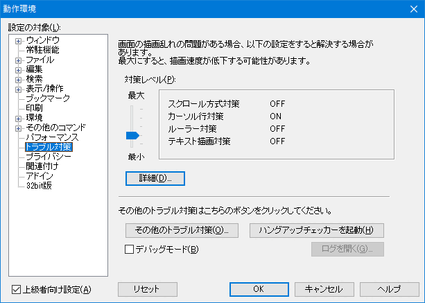
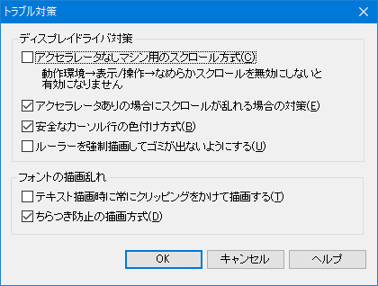

- 画面をスクロールさせたときにカーソルのある行の表示が乱れたり、ルーラーの表示が乱れたりします。
他のアプリケーションはまったく正常なので、秀丸エディタのバグだと思うんですが？

下記の設定を試してみてください。現象が改善するようであれば、ディスプレイドライバ側のバグが考えられます。
秀丸エディタの動作設定
「その他 → 動作環境 → トラブル対策」の対策レベルを調整してみてください。
また、「詳細」ボタンで表示される内容に関してもチェックボックスのON/OFFを切り替えてみてください。
もし表示がおかしくなるのが、日本語など半角英数字以外の場合、ファイルの文字コードと表示文字コードが食い違っている場合があります。
この場合は、[HME0051A]●漢字コードの使い分けを参考に 文字コードの食い違いが起きないようにしてください。